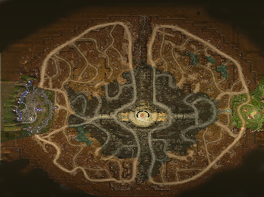

地图与模式
先分清“场景”与“规则配置”。同一张地形可以用于普通对战、人机、联赛、不同人数或特殊活动；复制的镜像目录也不应重复统计。
83去重后的地图描述配置
25独立场景资源
21主列表中允许生产使用的配置
8这些配置实际引用的场景
“允许生产使用”是这个源码版本的配置标志，不是历史正式上线清单。完整目录保留教学、训练、PvE、旧版与开发测试，并逐项写明用途。查看统计方法与完整模式总览
主列表中的 8 个场景

龙林 · 夺蛋竞赛
龙林迷宫；105 是刷怪点，屠龙后脚本清退怪物并进入夺蛋阶段。

边境之地 · 经典三线
经典边境之地及多个规则变体共用。
末日 · 规则与场景变体
末日场景；丧尸转换脚本。
新年 · 季节场景
新年场景；17 外部刷怪点＋1 内嵌刷怪点。

前哨 / 滴答 · 单线对战
前哨与滴答共用的单线场景。

合作试炼 · 五人 PvE
五人合作；10 塔为双方各 5 的备用阵营版本，本局保留本方 5 塔。

第一章 · 单人剧情
单人剧情；6 塔为双方各 3 的版本，剧情运行选择本方。

新手教学 · 分阶段训练
两章旧教学共用，脚本控制可用区域和对象。
卡片采用仓库原始小地图资源。季节／规则变体没有独立小地图时展示同族底图；这不代表美术场景完全相同。A、B 为阵营视图，N 为中立视图。
按玩法阅读
地图01_数量口径与模式总览
人数、目标、场景结构、触发规则、原版依据与批注。
地图02_经典边境之地完整拆解
人数、目标、场景结构、触发规则、原版依据与批注。
地图03_龙林前哨与全部对战变体
人数、目标、场景结构、触发规则、原版依据与批注。
地图04_合作试炼与单人剧情关卡
人数、目标、场景结构、触发规则、原版依据与批注。
地图05_教学训练与开发测试
人数、目标、场景结构、触发规则、原版依据与批注。
地图附录_83项配置与25个场景
人数、目标、场景结构、触发规则、原版依据与批注。
83 项配置完整入口
| 配置 | 用途分类 | 每队人数 | 登记／生产标记 |
|---|---|---|---|
| 龙林（德拉贡瓦尔德） | 对战主模式 | 4 | 主列表 / 允许 |
| 龙林（德拉贡瓦尔德） (1×1) | 测试人数/规则变体 | 1 | 主列表 / 不允许 |
| 龙林（德拉贡瓦尔德） (2×2) | 测试人数/规则变体 | 2 | 主列表 / 不允许 |
| 边境之地·烈焰 | 未纳入主列表的变体 | 5 | 未入主列表 / 不允许 |
| 故土 (1×1) | 测试人数/规则变体 | 1 | 主列表 / 不允许 |
| 故土 (2×2) | 测试人数/规则变体 | 2 | 主列表 / 不允许 |
| 故土 | 对战规则变体 | 5 | 主列表 / 允许 |
| 演习 | 测试人数/规则变体 | 1 | 主列表 / 不允许 |
| 演习 | 对战规则变体 | 5 | 主列表 / 允许 |
| 丧尸末日 (1×1) | 测试人数/规则变体 | 1 | 主列表 / 不允许 |
| 丧尸末日 (2×2) | 测试人数/规则变体 | 2 | 主列表 / 不允许 |
| 末日 | 对战规则变体 | 5 | 主列表 / 允许 |
| 英雄互换 (1×1) | 测试人数/规则变体 | 1 | 主列表 / 不允许 |
| 英雄互换 (2×2) | 测试人数/规则变体 | 2 | 主列表 / 不允许 |
| 英雄互换 | 对战规则变体 | 5 | 主列表 / 允许 |
| 队伍测试 | 测试人数/规则变体 | 5 | 主列表 / 不允许 |
| 锦标赛 (1×1) | 测试人数/规则变体 | 1 | 主列表 / 不允许 |
| 青铜联赛 | 联赛配置 | 5 | 主列表 / 允许 |
| 愚人节 (1×1) | 测试人数/规则变体 | 1 | 主列表 / 不允许 |
| 愚人节 (2×2) | 测试人数/规则变体 | 2 | 主列表 / 不允许 |
| 愚人节 | 节日规则变体 | 5 | 主列表 / 允许 |
| 锦标赛 (1×1) | 测试人数/规则变体 | 1 | 未入主列表 / 不允许 |
| 白银联赛 | 联赛配置 | 5 | 主列表 / 允许 |
| 锦标赛 (1×1) | 测试人数/规则变体 | 1 | 未入主列表 / 不允许 |
| 黄金联赛 | 联赛配置 | 5 | 主列表 / 允许 |
| 万圣节 (1×1) | 测试人数/规则变体 | 1 | 主列表 / 不允许 |
| 新年 (1×1) | 测试人数/规则变体 | 1 | 主列表 / 不允许 |
| 新年 (3×3) | 测试人数/规则变体 | 3 | 主列表 / 不允许 |
| 新年 | 季节场景变体 | 5 | 主列表 / 允许 |
| 夜间地图 | 未纳入主列表的变体 | 5 | 未入主列表 / 允许 |
| 战斗测试 (1×1) | 测试人数/规则变体 | 1 | 主列表 / 不允许 |
| 战斗测试 (2×2) | 测试人数/规则变体 | 2 | 主列表 / 不允许 |
| 战斗测试 (3×3) | 测试人数/规则变体 | 3 | 主列表 / 不允许 |
| 练习 | 人机练习 | 5 | 主列表 / 允许 |
| 初次进攻 | 教学关卡 | 1 | 主列表 / 允许 |
| 边境之地 | 对战主模式 | 5 | 主列表 / 允许 |
| 加速时间 (1×1) | 测试人数/规则变体 | 1 | 主列表 / 不允许 |
| 加速时间 (2×2) | 测试人数/规则变体 | 2 | 主列表 / 不允许 |
| 滴答 | 对战规则变体 | 3 | 主列表 / 允许 |
| 前哨 (1×1) | 测试人数/规则变体 | 1 | 主列表 / 不允许 |
| 前哨 (2×2) | 测试人数/规则变体 | 2 | 主列表 / 不允许 |
| 前哨 | 对战主模式 | 3 | 主列表 / 允许 |
| 故土 (1×1) | 测试人数/规则变体 | 1 | 未入主列表 / 不允许 |
| 故土 (2×2) | 测试人数/规则变体 | 2 | 未入主列表 / 不允许 |
| 故土 | 旧版地图/历史变体 | 5 | 未入主列表 / 允许 |
| 丧尸末日 (1×1) | 测试人数/规则变体 | 1 | 未入主列表 / 不允许 |
| 丧尸末日 (2×2) | 测试人数/规则变体 | 2 | 未入主列表 / 不允许 |
| 末日 | 旧版地图/历史变体 | 5 | 未入主列表 / 允许 |
| 英雄互换 (1×1) | 测试人数/规则变体 | 1 | 未入主列表 / 不允许 |
| 英雄互换 (2×2) | 测试人数/规则变体 | 2 | 未入主列表 / 不允许 |
| 英雄互换 | 旧版地图/历史变体 | 5 | 未入主列表 / 允许 |
| 队伍测试 | 测试人数/规则变体 | 5 | 未入主列表 / 不允许 |
| 锦标赛 (1×1) | 测试人数/规则变体 | 1 | 未入主列表 / 不允许 |
| 锦标赛 | 旧版地图/历史变体 | 5 | 未入主列表 / 允许 |
| 旧边境之地 | 旧版地图/历史变体 | 5 | 未入主列表 / 允许 |
| 战斗测试 (1×1) | 测试人数/规则变体 | 1 | 未入主列表 / 不允许 |
| 战斗测试 (2×2) | 测试人数/规则变体 | 2 | 未入主列表 / 不允许 |
| 战斗测试 (3×3) | 测试人数/规则变体 | 3 | 未入主列表 / 不允许 |
| 练习 | 旧版地图/历史变体 | 5 | 未入主列表 / 允许 |
| PvE 地图 1 | 开发测试/原型 | 5 | 未入主列表 / 不允许 |
| 五人 PvE 原型 | 开发测试/原型 | 5 | 未入主列表 / 不允许 |
| 小兵测试地图 | 开发测试/原型 | 5 | 未入主列表 / 不允许 |
| 试炼 | 合作难度父项/非生产难度 | 5 | 主列表 / 不允许 |
| 试炼 | 合作难度父项/非生产难度 | 5 | 主列表 / 不允许 |
| 试炼 | 合作试炼 | 5 | 主列表 / 允许 |
| 试炼 | 合作试炼 | 5 | 主列表 / 允许 |
| 试炼 (2×2) | 测试人数/规则变体 | 2 | 主列表 / 不允许 |
| 试炼 | 合作试炼 | 5 | 主列表 / 允许 |
| 试炼 | 合作难度父项/非生产难度 | 5 | 未入主列表 / 允许 |
| 试炼 | 单人剧情 | 1 | 主列表 / 允许 |
| 测试 1 | 开发测试/原型 | 5 | 未入主列表 / 不允许 |
| 平衡测试 | 开发测试/原型 | 5 | 未入主列表 / 不允许 |
| 合作生物测试 | 开发测试/原型 | 5 | 未入主列表 / 不允许 |
| 设计与美术测试 | 开发测试/原型 | 5 | 未入主列表 / 不允许 |
| 决斗测试 | 开发测试/原型 | 5 | 未入主列表 / 不允许 |
| 平面测试 (1×1) | 开发测试/原型 | 1 | 主列表 / 不允许 |
| 平面测试 (2×2) | 开发测试/原型 | 2 | 主列表 / 不允许 |
| 平面测试 (训练) | 开发测试/原型 | 2 | 主列表 / 不允许 |
| 样条测试 | 开发测试/原型 | 5 | 未入主列表 / 不允许 |
| 地形测试 | 开发测试/原型 | 5 | 未入主列表 / 不允许 |
| 5 对 5 测试 | 开发测试/原型 | 5 | 未入主列表 / 不允许 |
| 初次进攻 | 教学关卡 | 1 | 主列表 / 允许 |
| 推进攻势 | 教学关卡 | 1 | 主列表 / 允许 |
25 个场景完整入口
- 01 · 龙林迷宫；105 是刷怪点，屠龙后脚本清退怪物并进入夺蛋阶段。
- 02 · 烈焰变体；未入主列表。
- 03 · 末日场景；丧尸转换脚本。
- 04 · 万圣节场景；主列表仅引用 1 对 1 测试配置。
- 05 · 新年场景；17 外部刷怪点＋1 内嵌刷怪点。
- 06 · 夜间变体；30 秒昼、120 秒夜，初始夜。
- 07 · 经典边境之地及多个规则变体共用。
- 08 · 前哨与滴答共用的单线场景。
- 09 · 旧版末日场景，未入主列表。
- 10 · 旧边境之地场景，15 个中立刷怪点。
- 11 · PvE 地牢原型；无标准核心与塔，不补造胜负条件。
- 12 · 五人 PvE 地牢原型；无标准核心与塔。
- 13 · 小兵测试原型；本场景无静态中立刷怪点。
- 14 · 五人合作；10 塔为双方各 5 的备用阵营版本，本局保留本方 5 塔。
- 15 · 单人剧情；6 塔为双方各 3 的版本，剧情运行选择本方。
- 16 · PvE 测试 1，46 个中立刷怪点。
- 17 · 数值平衡试验场。
- 18 · 合作敌军与刷怪配置试验场。
- 19 · 设计与美术小型验证场。
- 20 · 决斗试验场；名称不能覆盖默认每队 5 人字段。
- 21 · 平面测试：1 对 1、2 对 2 与训练入口。
- 22 · 样条/地形验证场。
- 23 · 纯地形验证场；未组成标准战斗目标。
- 24 · 5 对 5 测试场；2 个内嵌阵营刷兵点。
- 25 · 两章旧教学共用，脚本控制可用区域和对象。